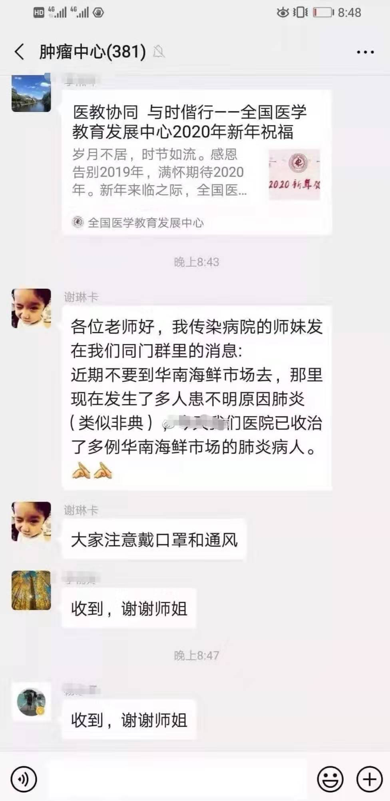

专访武汉“造谣”者之一谢琳卡医生：我的事情其实很简单，希望更多支援医护人员抗疫物资 - 经济观察网 － 专业财经新闻网站
原文链接 备份链接 经济观察网 记者 张晓晖 在武汉新冠肺炎疫情爆发初期，被武汉警方认为“造谣”而遭到警告的8位人士之一的华中科技大学同济医学院附属协和医院（下称“武汉协和医院”）肿瘤科医生谢琳卡，是最早向同事和亲友发出疫情警示的专业医生 …
【财新网】（记者 覃建行 实习记者 王颜玉）继医生李文亮之后，另一名被誉为新型冠状病毒肺炎疫情“吹哨人”的武汉医生现身。2月1日上午，华中科技大学同济医学院附属协和医院（下称武汉协和医院）肿瘤中心主治医师谢琳卡接受财新记者采访表示，其出身传染病专业，对此类疫情“警惕性会高一点”，在微信群发出预警是为了提醒大家注意。谢琳卡说，信息被截图转发后她曾接到武汉警方来电，被“口头教育”。警方要求其不要传播不实信息，但并未受到具体处罚，身边也有不少人对她表示支持。
2019年12月30日，一份由武汉卫健委印发的《关于做好不明原因肺炎救治工作的紧急通知》在社交媒体上流传，其中提及武汉多家医疗机构陆续出现多例不明原因肺炎病例，并与华南海鲜市场有关联。这份通知还要求严格信息上报，并强调“未经授权任何单位，个人不得擅自对外发布救治信息”。
巧合的是，同一天有多名武汉医生在微信群提到了类似信息，他们的预警、提醒信息被截图并广为转发，使得这一已被证明具有“人传人”特征的传染病被部分人提前关注到。1月20日后，随着新冠肺炎疫情迅猛发展，公众追溯疫情源头才发现，原来早已有人预警，他们因此被称为最早揭开盖子的“吹哨人”、“预警者”，其遭遇也备受公众关注。
这些医生中包括武汉市中心医院眼科医生李文亮。他曾在一个150人左右的同学群中发布信息称：“华南水果海鲜市场确诊了7例SARS，在我们医院急诊科隔离”。不久后，他受到单位约谈、警方训诫，又在接诊过程中自己被感染，家人和同事也相继感染。1月30日，李文亮选择公开身份，并接受财新记者采访。2月1日上午，他告诉财新记者，此前一天的第三次核酸检测有了结果：阳性。他已经被确诊感染新型冠状病毒肺炎（详见财新网：“新冠肺炎‘吹哨人’李文亮确诊 曾被警方训诫（更新）”）。
2月1日上午，另一位被实名截图转发的武汉医生谢琳卡也决定公开身份。
在李文亮发出提醒的同一天，2019年12月30日20时48分，谢琳卡在其工作的武汉协和医院肿瘤中心微信群发布消息称，“近期不要到华南海鲜市场去，那里现在发生了多人患不明原因肺炎（类似非典），今天我们医院已收治了多例华南海鲜市场的肺炎病人，大家注意戴口罩和通风。”谢琳卡在群中称，其消息来源是“我传染病院的师妹发在我们同门群里的消息”。当时这一微信群有443人，谢琳卡的遭遇和李文亮类似，这一信息被人截图并广泛转发，而且没有隐去她的名字。很快就有人找到了谢琳卡，并询问她究竟发生了什么事。

2019年12月30日晚，武汉医生谢琳卡在工作单位的微信群发布不明肺炎的信息，提醒注意防护。这条信息此后被截图转发，谢琳卡接到警方电话，被口头教育。受访者提供
谢琳卡今年39岁，是武汉本地人，博士毕业于华中科技大学同济医学院。另据“好大夫”在线网站介绍，谢琳卡2008-2011年、2015年在德国乌尔姆大学注于肿瘤抑癌基因的研究，曾获得国家自然科学基金项目资助，从事临床诊疗十余年。
谢琳卡告诉财新记者，她的消息来自读书时的感染科同门群，有师妹所工作的医院收治了类似患者，称“有多例表现类似的不明原因肺炎患者出现，并且都有华南海鲜市场接触史”。 谢琳卡介绍，她虽然是一名乳腺肿瘤科医生，但读研究生期间学的是感染病学专业，所以警惕性会高一点。而且她所工作的武汉协和医院肿瘤中心正好坐落于华南海鲜市场附近，自己又有不少同事住在那旁边，肿瘤中心收治的患者抵抗力也比较低。出于“防患于未然的考虑”，她才在肿瘤中心内部群建议大家做好防护。
“没想到被截图，第二天一睁眼居然成了网红。我一个普通医生哪里经历过这种情况，心里压力确实大。”谢琳卡说，第二天就接到了不少人的电话和微信询问，她一一提醒大家要带口罩，做好防护。此后不久，医院宣传科工作人员找她谈话。“宣传的老师找我问了一下情况，我说我以前是学感染的，只是觉得大家需要警惕这个情况，我就提醒一下，也没有别的想法。那个老师也安慰了我说我做的没有错。”
“出了这个事之后我心理压力也比较大，但是我没有向李医生一样收到训诫书。”谢琳卡说，元旦过后，大约1月3日她接到了武汉警方打来的电话。“态度也比较客气，没有处分，没有训诫，就是口头教育，警示了我一下，让医生不要传播不实信息。具体说了什么我不太记得了。当时我也反驳说我们都是一线医生，工作在前面的医生风险很高，我只是提醒大家注意隔离和保护自己。”
对于截图外传并被警方打电话警示，谢琳卡表示自己一度很紧张，但并不后悔这样做。谢琳卡说，自己是学感染的，在群聊中发布预警信息时用语很斟酌，“主要强调了类似的一个表现，然后有接触史”，“只是想提醒大家做好防护，并不想制造恐慌情绪”。截图被广泛传播后，不少同事、患者都来安慰谢琳卡并对她的行为表示支持，谢琳卡的感染科的老师也赞同她的预警行为，“感染的情况，只要有可能性，医生都是要提醒大家去防护，因为防护越早，它传播的距离就越短。”
据谢琳卡介绍，在她提醒后身边的同事开始注意防护了，但由于医院当时还没有条件对疑似患者展开检测，开始陆续出现医护人员被感染的情况。谢琳卡说，她目前仍在肿瘤中心上班，一半以上的年轻同事都被抽调到了武汉协和医院本部的发热门诊、隔离病房。“我当时也是要调过去的，这段时间感冒有点咳嗽，所以不太适合去门诊，所以现在在病房正常工作。”她称，目前肿瘤中心的患者有些也在发烧，同样需要人照料，“留守的医生值班也是一个人负责好几层楼”。
1月1日，武汉市公安局官方微博@平安武汉通报：八名散布谣言者被依法查处。通报称，近期，该市部分医疗机构发现接诊了多例肺炎病例，市卫健委就此发布了情况通报，但一些网友在不核实的情况下，在网络上发布、转发不实消息，造成不良社会影响。公安机关经调查核实，已传唤八名违法人员，并依法进行了处理。此后，这一信息还被央视新闻报道。
谢琳卡称，她大概在1月3日左右接到了武汉警方电话，而在这之前就已经有八名“造谣者”的新闻传开。财新记者注意到，武汉警方第一次通报已传唤八名违法人员是在1月1日17时38分。“我不太清楚警方通报的八个人算不算我。”谢琳卡说，据她所知发出预警还有其他人，“当时接触到这个情况很多医生应该都做了内部预警，只是我们几个正好被截图发出去了而已”。
目前诸多网友和公益组织发起了寻找八名“造谣者”的活动，希望能还原他们的遭遇，对他们发出预警的行为予以鼓励。近日，有公益组织联系谢琳卡，想给予资金奖励，但被谢琳卡婉拒。“我并不需要这些奖励，如果可能的话希望将资金转化为口罩、防护服等物资，直接与协和医院肿瘤中心对接，让一线医生多一些防护。”谢琳卡说。
此文限时免费阅读。感谢热心读者订阅财新通，支持新闻人一线探求真相！成为财新通会员，畅读财新网！
更多报道详见：【专题】新冠肺炎防疫全纪录（实时更新中）
原文链接 备份链接 经济观察网 记者 张晓晖 在武汉新冠肺炎疫情爆发初期，被武汉警方认为“造谣”而遭到警告的8位人士之一的华中科技大学同济医学院附属协和医院（下称“武汉协和医院”）肿瘤科医生谢琳卡，是最早向同事和亲友发出疫情警示的专业医生 …
原文链接 备份链接 经济观察网 记者 张晓晖 在这次始自武汉、蔓延至全国的新型冠状病毒肺炎疫情中，华中科技大学同济医学院附属同济医院（以下简称“武汉同济医院”）是武汉最早收治非冠病患的几家医院之一。 武汉同济医院历史悠久，其1900年由同 …
原文链接 备份链接 过去的十天，是打仗一般的日子。多数人都没有料到，中国将度过一个如此特殊的春节。对我而言，从1月21日发起并参与《三联生活周刊》对新冠肺炎的报道，我迅速经历了从回家度假到进入“战斗”状态的过程。哪怕才过十天，回想起从1 …
原文链接 备份链接 “人如果在家里死了，是留不下这个人的记录的，没人知道他是因为肺炎死的。” 口述 | 李雪（化名） 记者 | 张从志 床位极度紧缺 ▲▲▲ 父亲今年64岁，武汉人，公务员退休。从1月17日确认感染后，他的食欲变得非常差， …
原文链接 备份链接 3月21日。 封城第59天。这么长时间了！ 昨天那么大的太阳，今天突然就阴了。下午还下了点雨。这时节的春雨，对于院子里的树以及花，都还是很需要的。前两三天，武大樱花盛开，树下空荡无人，估计是记者拍了一些照片，同学群里便 …